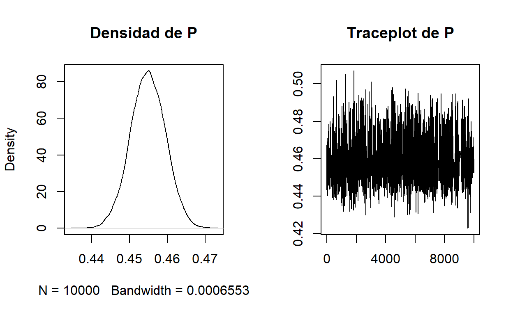
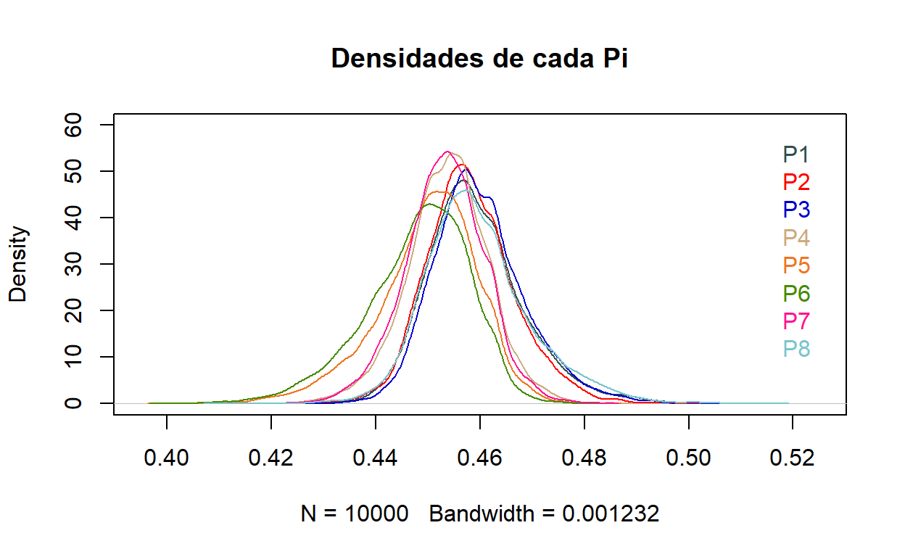
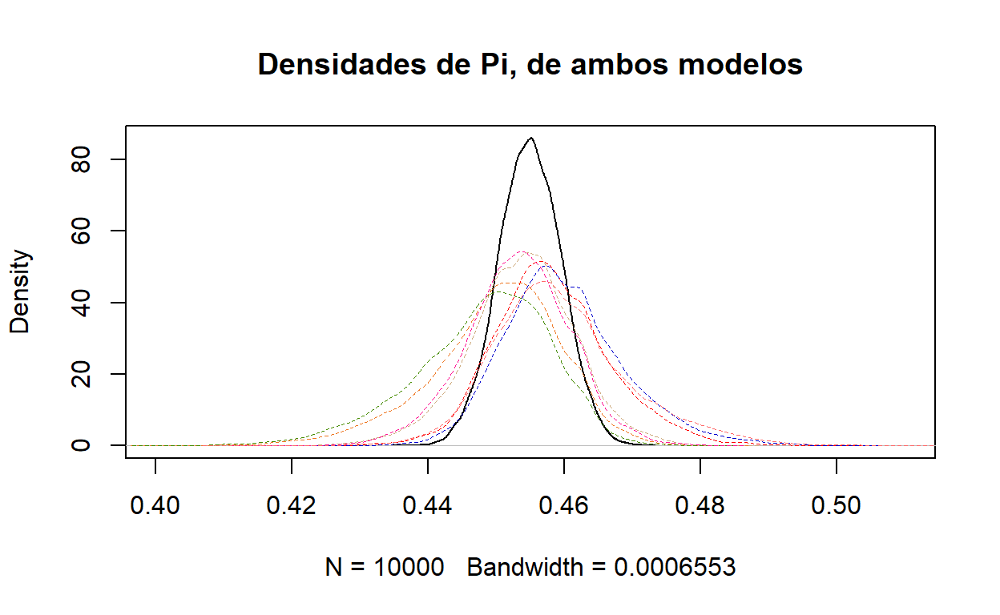
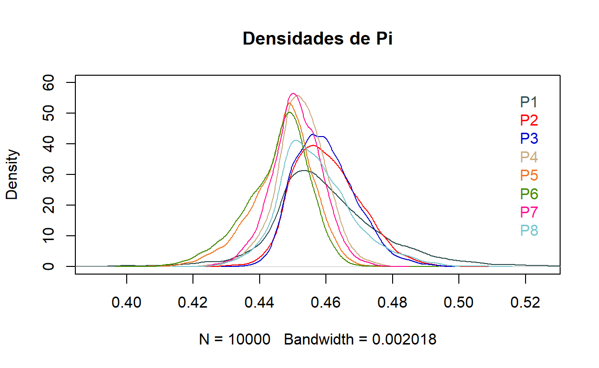
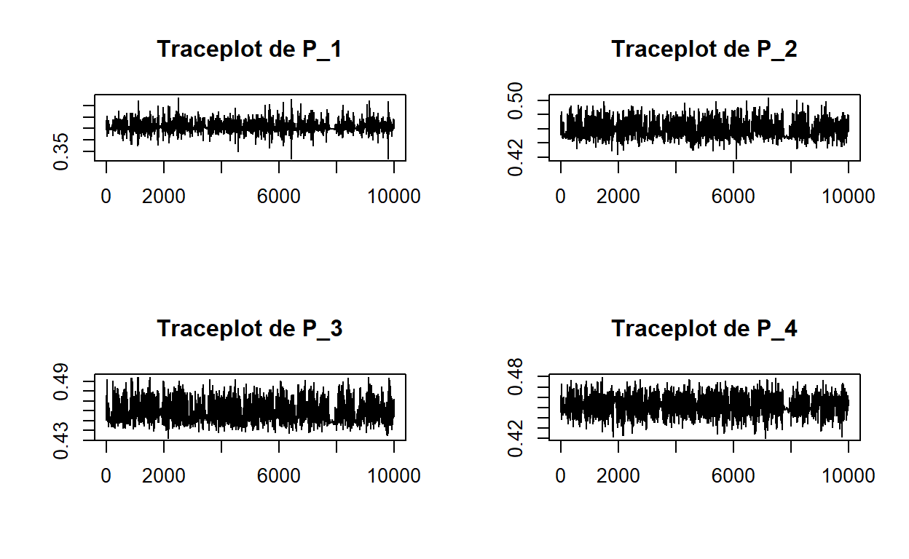
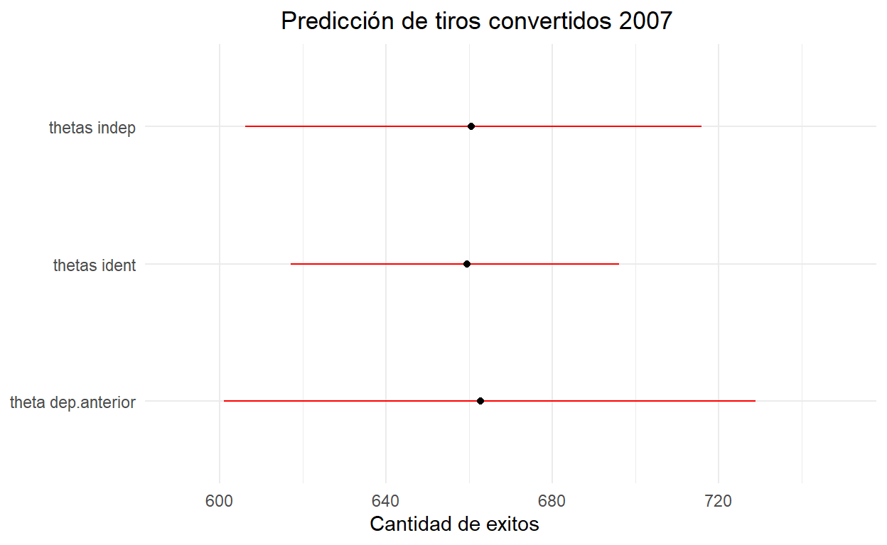
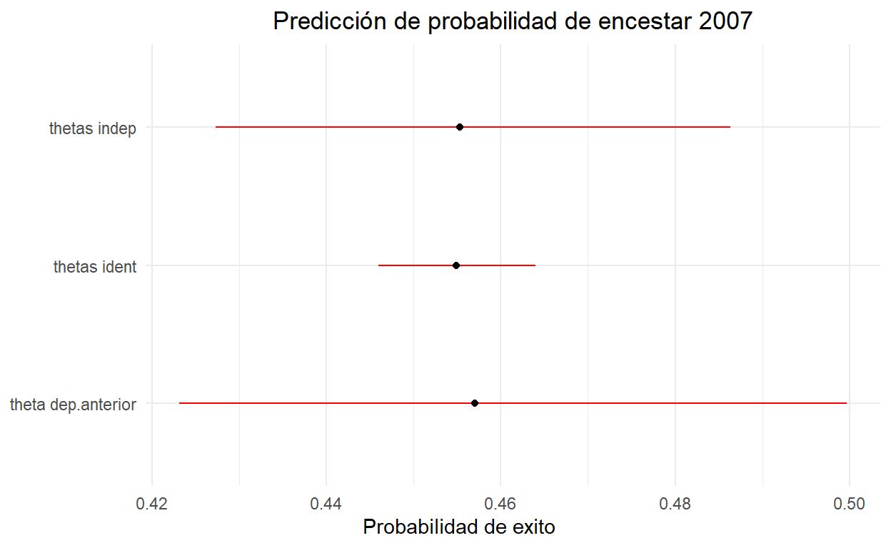

Tarea 2
Tarea 2
Pregunta 1
Dentro de este contexto, el valor de A se encarga de determinar la variabilidad de \(\mu_\theta\), de tal forma que si \(A\approx 0\), este parámetro en cuestión tendria muy poca variabilidad, lo cual lleva a que todos lo \(\theta_t\) esten centrados muy cerca entre si, por otro lado, si A se acerca a un valor más grande, por ejemplo A=10000, esto llevaria a que \(\mu_\theta\) tenga una mayor varianza y esto provocaría que los valores de cada \(\theta_t\) se encuentren trasladados diferentemente los unos con los otros.
Para el caso de B, este valor se encarga de especificar hasta que valor puede alcanzar la desviación estandar de \(\theta_t\), por lo que si B tiene valores cercanos a 0, implicaría que las distribuciones de \(\theta_t\) tengan muy poca varianza, por el contrario, si B tiene un valor muy grande, podría provocar que las varianzas de \(\theta_t\) sean muy grandes y distintas entre si.
Es por ello que se propone un modelo tal que A=10 y B=10. la justificación para el valor de A viene en que, de esta forma, \(\mu_\theta\) tiene suficientemente flexibilidad al momento de ser simulado sin ser excesivo, al igual que para \(\sigma^2_\theta\) ,de hecho, para el valor que se da para B, implica que el maximo valor de \(\sigma^2_\theta\) es 100, lo cual es una varianza bastante grande para este contexto
(El modelo ajustado se encuentra en el código de R)
Pregunta 2
Cuando se ajusta el modelo con \(\theta_t\) idénticos, se tiene que la densidad de \(\pi_t\) a posteriori y su traceplot son.
En este modelo, como los \(\theta_t\) son idénticos, también se puede ver como que hay un solo \(\theta_t\) para todos los años, es por eso que en el gráfico solo se ve la densidad de un parámetro \(\pi_t\).
Es posible ver que la densidad de \(\pi_t\) tiene la mayoría de su masa entre 0.45 y 0.46, por lo que se puede decir que, en un partido de basquetbol , donde se tiene el supuesto en que Kobe Bryant juega siempre con la misma eficiencia durante todos lo años, la probabilidad de que convierta un punto cuando él lanza, esta aproximadamente cerca de 0.455.
Por otro lado, el traceplot indica que el modelo convergió correctamente.
Y para el caso en que los \(\theta_t\) son independientes, las densidades para cada \(\pi_t\) son.

Y sus traceplots.

El siguiente gráfico muestra las densidades de los \(\pi_t\) para el modelo con \(\theta_t\) unico y \(\theta_t\) independientes.

Se puede apreciar que cuando se ocupa un modelo con los \(\theta_t\) idénticos, el parámetro \(\pi_t\) tiene una menor variabilidad, en comparación a los que fueron generados con el modelo de \(\theta_t\) independientes. Pero de todas formas, todas las densidades estan centradas en valores cercanos de 0.45.
Pregunta 3
En este caso, el valor de C es el valor que se encarga de especificar la varianza que tendrá \(\theta_{1999}\) en este modelo. es por ello que si C es muy cercano de 0, haria que \(\theta_{1999}\) este también muy cercano a 0, y de la misma manera, los \(\theta_t\) estarian aproximadamente centrados en 0. por el contrario, si C toma valores exageradamente grandes, podría provocar que \(\theta_{1999}\) tenga una media ubicada en cualquier ubicación de los reales, y de esta forma, los \(\theta_{t}\) estaria centrados aproximadamente en \(\theta_{1999}\).
Por otro lado, D especifica el valor máximo de la varianza que puede tomar la distribución de \(\theta_t\). D cercanos a 0, implica que las densidades de todos los \(\theta_t\) sean muy parecidos entre si, ya que especificarian poca varianza entre cada año, por el contrario, si D toma valores muy grandes, causaria que posiblemente todos los \(\theta_t\) tengan muy alta varianza.
Dicho esto, se opta por usar C=10 y D=10, para el caso de C, le da suficiente libertad a la varianza de \(\theta_{1999}\) y para D también logra abordar una amplia varianza sin llegar a ser excesivo, y de esta forma poder tener un equilibrio entre la información de los datos y de las prioris.

En el gráfico se puede ver que las densidades de estos \(\pi_t\) estan centradas a valores cercanos de 0.45, al igual que en los modelos anteriores. A continuación, se muestran los traceplots de las densidades de \(\pi_t\)


Como los traceplots se comportan como un ruido blanco, se puede decir que lo valores convergieron.
Pregunta 4
a)
La siguiente tabla muestra las estimaciones de \(\theta_t\) posteriori para cada modelo.
| \[ t \] | Modelo \(\theta_t\) independientes | Modelo \(\theta_t\) idénticos | Modelo \(\theta_t\) dependiente de \(\theta_{t-1}\) |
|---|---|---|---|
| 1999 | -0.16 | -0.18 | -0.15 |
| 2000 | -0.16 | -0.18 | -0.15 |
| 2001 | -0.16 | -0.18 | -0.15 |
| 2002 | -0.18 | -0.18 | -0.19 |
| 2003 | -0.19 | -0.18 | -0.21 |
| 2004 | -0.20 | -0.18 | -0.22 |
| 2005 | -0.18 | -0.18 | -0.19 |
| 2006 | -0.16 | -0.18 | -0.16 |
Es posible ver que durante todos los años y para cada modelo, se tuvieron estimaciones de \(\theta_t\) muy parecidos. Por lo que se puede decir que para cada modelo se obtuvieron casi los mismo resultados.
b)
La siguiente tabla muestra las predicciones puntuales de \(y_{2007}\) y \(\pi_{2007}\)
| Predicción | Modelo \(\theta_t\) independientes | Modelo \(\theta_t\) idénticos | Modelo \(\theta_t\) dependiente de \(\theta_{t-1}\) |
|---|---|---|---|
| \[ \hat{y}_{2007} \] | 660 | 659 | 663 |
| \[ \hat\pi_{2007} \] | 0.454 | 0.454 | 0.457 |
Y ahora se tienen los intervalos de credibilidad de cada modelo para \(y_{2007}\).

Y para \(\pi_{2007}\)

En ambos gráficos, las medias estan ubicadas en valores cercanos entre si para todos los modelos, pero la diferencia estan en las varianzas, para el modelo con los \(\theta_t\) dependientes de los años anteriores se tiene una gran varianza, mientras que para el caso de un \(\theta_t\) unico, se tiene una menor varianza en comparación a los otros modelos.
c)
Usando WAIC, el modelo con menor valor en este caso es el modelo 2, es decir el modelo donde todos los \(\theta_t\) eran idénticos
| Modelo | WAIC |
|---|---|
| Model1 | 71.8 |
| Model2 | 71.5 |
| Model3 | 78.1 |
También, cuando se calcula el BIC de cada modelo, se tiene la siguente tabla.
| Modelo | BIC |
|---|---|
| Model1 | 182.06 |
| Model2 | 104.36 |
| Model3 | 171.41 |
Usando este criterio, también se prefiere el modelo 2, puesto que el BIC prioriza los modelos más parsimoniosos.
Dado los criterios evaluados anteriormente, si se tuviera que elegir un modelo, se eligiriá el modelo con los \(\theta_t\) idénticos. Otra razón que vale la pena mencionar, es que se llegan a resultados muy similares con los otros modelos y con muchos menos parámetros.